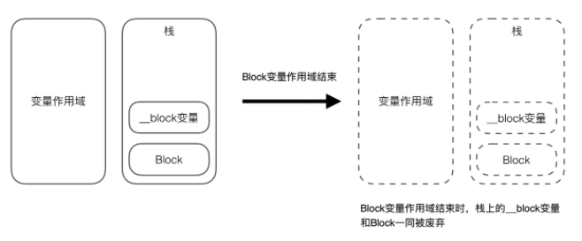

Block 的内存管理
在 Objective-C 语言中，block 有 3 种类型，可以通过调用 class 方法或者 isa 指针查看具体类型，最终都是继承自 NSBlock 类型
_NSConcreteGlobalBlock全局的静态block，不会访问任何外部变量，它是设置在程序的数据区域（.data区）中。_NSConcreteStackBlock保存在栈中的block，当函数返回时会被销毁，超出变量作用域，栈上的block以及__block变量都被销毁。_NSConcreteMallocBlock保存在堆中的block，当引用计数为0时会被销毁，在变量作用域结束时不受影响。
- 没有访问
auto变量，变成_NSConcreteGlobalBlock； - 不在
ARC环境下，访问了auto变量，变成_NSConcreteStackBlock，如果在ARC环境下，访问了auto变量，变成_NSConcreteMallocBlock； __NSStackBlock__调用了copy，变成_NSConcreteMallocBlock；
每一种类型的 block 调用 copy 后的结果：

什么情况下 ARC 会自动将 block 进行一次 copy 操作
在 ARC 的环境下，block 默认是从栈区 copy 到堆区。
block作为函数返回值时；1
2
3
4
5
6
7
8
9
10
11
12
13
14
15
16
17
18
19typedef void (^Block)(void);
Block myblock()
{
int a = 10;
// 上文提到过，block中访问了auto变量，此时block类型应为__NSStackBlock__
Block block = ^{
NSLog(@"---------%d", a);
};
return block;
}
int main(int argc, const char * argv[]) {
@autoreleasepool {
Block block = myblock();
block();
// 打印block类型为 __NSMallocBlock__
NSLog(@"%@",[block class]);
}
return 0;
}上文提到过，不在
ARC环境下，访问了auto变量，变成_NSConcreteStackBlock，如果在ARC环境下，访问了auto变量，变成_NSConcreteMallocBlock；那么说明ARC环境下，在block作为函数返回值时会自动帮助我们对block进行copy操作，以保存block，并在适当的地方进行release操作。将
block赋值给__strong指针时；1
2
3
4
5
6
7
8
9
10
11
12
13
14
15
16
17
18
19
20int main(int argc, const char * argv[]) {
@autoreleasepool {
// block内没有访问auto变量
Block block = ^{
NSLog(@"block---------");
};
NSLog(@"%@",[block class]);
int a = 10;
// block内访问了auto变量，但没有赋值给__strong指针
NSLog(@"%@",[^{
NSLog(@"block1---------%d", a);
} class]);
// block赋值给__strong指针
Block block2 = ^{
NSLog(@"block2---------%d", a);
};
NSLog(@"%@",[block1 class]);
}
return 0;
}block被强指针引用时，ARC环境下也会自动对block进行一次copy操作。block作为Cocoa API中方法名含有usingBlock的方法参数时；1
2
3
4NSArray *array = @[];
[array enumerateObjectsUsingBlock:^(id _Nonnull obj, NSUInteger idx, BOOL * _Nonnull stop) {
}];block作为GCD API的方法参数时；1
2
3
4
5
6
7static dispatch_once_t onceToken;
dispatch_once(&onceToken, ^{
});
dispatch_after(dispatch_time(DISPATCH_TIME_NOW, (int64_t)(1.0 * NSEC_PER_SEC)), dispatch_get_main_queue(), ^{
});
在 ARC 的环境下，为了解决栈块在其变量作用域结束之后被废弃（释放）的问题，我们需要把 block copy 到堆中，延长其生命周期。大多数情况下编译器会恰当地进行判断是否有需要将 block 从栈复制到堆，如果有，自动生成将 block 从栈上复制到堆上的代码。 block 的复制操作执行的是 copy 实例方法。block 只要调用了 copy 方法，栈块就会变成堆块。
block 对对象变量的捕获
1 | typedef void (^Block)(void); |
大括号执行完毕之后，person 依然不会被释放。上一篇文章提到过，person 为 aotu 变量，传入的 block 的变量同样为 person，即 block 有一个强引用引用 person，所以 block 不被销毁的话，peroson 也不会销毁。
1 | //MRC环境下代码 |
将上述代码转移到 MRC 环境下，在 MRC 环境下即使 block 还在，person 却被释放掉了。因为 MRC 环境下 block 在栈空间，栈空间对外面的 person 不会进行强引用。
1 | block = [^{ |
block 调用 copy 操作之后，person 不会被释放。
只需要对栈空间的 block 进行一次 copy 操作，将栈空间的 block 拷贝到堆中，person 就不会被释放，说明堆空间的 block 可能会对 person 进行一次 retain 操作，以保证 person 不会被销毁。堆空间的 block 自己销毁之后也会对持有的对象进行 release 操作。
也就是说栈空间上的 block 不会对对象强引用，堆空间的 block 有能力持有外部调用的对象，即对对象进行强引用或去除强引用的操作。
1 | typedef void (^Block)(void); |
__weak 添加之后，person 在作用域执行完毕之后就被销毁了。
将代码转化为 c++ 来看一下上述代码之间的差别。__weak 修饰变量，需要告知编译器使用 ARC 环境及版本号否则会报错，添加说明 -fobjc-arc -fobjc-runtime=ios-8.0.0
1 | xcrun -sdk iphoneos clang -arch arm64 -rewrite-objc -fobjc-arc -fobjc-runtime=ios-8.0.0 main.m |
__weak 修饰的变量，在生成的 __main_block_impl_0 中也是使用 __weak 修饰。
1 | static struct __main_block_desc_0 { |
在 ARC 的环境下，当 block 中捕获对象类型的变量时，我们发现 block 结构体 __main_block_impl_0 的描述结构体 __main_block_desc_0 中多了两个参数 copy 和 dispose 函数。
copy 本质就是 __main_block_copy_0 函数，__main_block_copy_0 函数内部调用 _Block_object_assign 函数；dispose 本质就是 __main_block_dispose_0 函数，__main_block_dispose_0 函数内部调用 _Block_object_dispose 函数；
上述 __main_block_impl_0 结构体中看出，没有使用 __block 修饰的变量(object 和 weadObj)则根据他们本身被 block 捕获的指针类型对他们进行强引用或弱引用，而一旦使用 __block 修饰的变量，__main_block_impl_0 结构体内一律使用强指针引用生成的结构体。
_Block_object_assign 函数调用时机及作用
当 block 进行 copy 操作的时候就会自动调用 __main_block_desc_0 内部的 __main_block_copy_0 函数， __main_block_copy_0 函数内部会调用 _Block_object_assign 函数。
_Block_object_assign 函数会自动根据 __main_block_impl_0 结构体内部的 person 是什么类型的指针，对 person 对象产生强引用或者弱引用。可以理解为 _Block_object_assign 函数内部会对 person 进行引用计数器的操作，如果 __main_block_impl_0 结构体内 person 指针是 __strong 类型，则为强引用，引用计数 +1，如果 __main_block_impl_0 结构体内 person 指针是 __weak 类型，则为弱引用，引用计数不变。
_Block_object_dispose 函数调用时机及作用
当 block 从堆中移除时就会自动调用 __main_block_desc_0 中的 __main_block_dispose_0 函数，__main_block_dispose_0 函数内部会调用 _Block_object_dispose 函数。
_Block_object_dispose 会对 person 对象做释放操作，类似于 release，也就是断开对 person 对象的引用，而 person 究竟是否被释放还是取决于 person 对象自己的引用计数。
总结
相同点
当
block内部访问了对象类型的auto变量时
如果block是在栈上，将不会对auto变量产生强引用；如果
block被拷贝到堆上
会调用block内部的copy函数，copy函数内部会调用_Block_object_assign函数，_Block_object_assign函数会根据auto变量的修饰符(__strong、__weak、__unsafe_unretained)做出相应的操作，形成强引用(retain)或者弱引用；
__block 变量（假设变量名叫做a）
1 | _Block_object_assign((void*)&dst->a, (void*)src->a, 8/*BLOCK_FIELD_IS_BYREF*/); |
对象类型的 auto 变量（假设变量名叫做p）
1 | _Block_object_assign((void*)&dst->p, (void*)src->p, 3/*BLOCK_FIELD_IS_OBJECT*/); |
- 如果
block从堆上移除
会调用block内部的dispose函数，dispose函数内部会调用_Block_object_dispose函数，_Block_object_dispose函数会自动释放引用的auto变量(release)；
__block 变量（假设变量名叫做a）
1 | _Block_object_dispose((void*)src->a, 8/*BLOCK_FIELD_IS_BYREF*/); |
对象类型的auto变量（假设变量名叫做p）
1 | _Block_object_dispose((void*)src->p, 3/*BLOCK_FIELD_IS_OBJECT*/); |
不同点
没有使用 __block 修饰的变量(object 和 weadObj)则根据他们本身被 block 捕获的指针类型对他们进行强引用或弱引用，而一旦使用 __block 修饰的变量，__main_block_impl_0 结构体内一律使用强指针引用生成的结构体。
__forwarding 指针
上面提到过 __forwarding 指针指向的是结构体自己。当使用变量的时候，通过结构体找到 __forwarding 指针，在通过 __forwarding 指针找到相应的变量。这样设计的目的是为了方便内存管理。通过上面对 __block 变量的内存管理分析我们知道，block 被复制到堆上时，会将 block 中引用的变量也复制到堆中。
当在 block 中修改 __block 修饰的变量时，
1 | static void __main_block_func_0(struct __main_block_impl_0 *__cself) { |
通过源码可以知道，当修改 __block 修饰的变量时，是根据变量生成的结构体这里是 __Block_byref_age_0 找到其中 __forwarding 指针，__forwarding 指针指向的是结构体自己因此可以找到 age 变量进行修改。
当 block 在栈中时，__Block_byref_age_0 结构体内的 __forwarding 指针指向结构体自己。
而当 block 被复制到堆中时，栈中的 __Block_byref_age_0 结构体也会被复制到堆中一份，而此时栈中的 __Block_byref_age_0 结构体中的 __forwarding 指针指向的就是堆中的 __Block_byref_age_0 结构体，堆中 __Block_byref_age_0 结构体内的 __forwarding 指针依然指向自己。
此时当对 age 进行修改时，
1 | // 栈中的age |
通过 __forwarding 指针巧妙的将修改的变量赋值在堆中的 __Block_byref_age_0中。